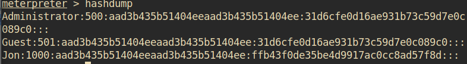

Task 4 Cracking
Dump the non-default user's password and crack it!
Within our elevated meterpreter shell, run the command 'hashdump'. This will dump all of the passwords on the machine as long as we have the correct privileges to do so. What is the name of the non-default user?

• Jon
Copy this password hash to a file and research how to crack it. What is the cracked password?
• On newer versions of Windows the LM hash is disabled by default. Hence why the LM portion of the hash (the one preceding the colon) is marked to be empty (as indicated by ‘aad3’). Therefore, to crack the real password the NT hash needs to be used. This can be done online using Crackstation or offline using hashcat or the crack_windows module in Metasploit. The latter did not work in my case, however.
• alqfna22